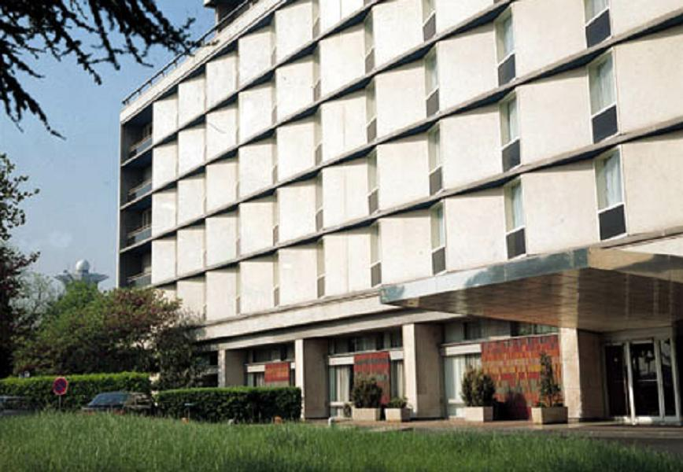

Feature Detection
Overview
// enums enum cv::LineSegmentDetectorModes; // classes class cv::LineSegmentDetector; // global functions void cv::Canny( InputArray image, OutputArray edges, double threshold1, double threshold2, int apertureSize = 3, bool L2gradient = false ); void cv::Canny( InputArray dx, InputArray dy, OutputArray edges, double threshold1, double threshold2, bool L2gradient = false ); void cv::cornerEigenValsAndVecs( InputArray src, OutputArray dst, int blockSize, int ksize, int borderType = BORDER_DEFAULT ); void cv::cornerHarris( InputArray src, OutputArray dst, int blockSize, int ksize, double k, int borderType = BORDER_DEFAULT ); void cv::cornerMinEigenVal( InputArray src, OutputArray dst, int blockSize, int ksize = 3, int borderType = BORDER_DEFAULT ); void cv::cornerSubPix( InputArray image, InputOutputArray corners, Size winSize, Size zeroZone, TermCriteria criteria ); Ptr<LineSegmentDetector> cv::createLineSegmentDetector( int _refine = LSD_REFINE_STD, double _scale = 0.8, double _sigma_scale = 0.6, double _quant = 2.0, double _ang_th = 22.5, double _log_eps = 0, double _density_th = 0.7, int _n_bins = 1024 ); void cv::goodFeaturesToTrack( InputArray image, OutputArray corners, int maxCorners, double qualityLevel, double minDistance, InputArray mask = noArray(), int blockSize = 3, bool useHarrisDetector = false, double k = 0.04 ); void cv::HoughCircles( InputArray image, OutputArray circles, int method, double dp, double minDist, double param1 = 100, double param2 = 100, int minRadius = 0, int maxRadius = 0 ); void cv::HoughLines( InputArray image, OutputArray lines, double rho, double theta, int threshold, double srn = 0, double stn = 0, double min_theta = 0, double max_theta = CV_PI ); void cv::HoughLinesP( InputArray image, OutputArray lines, double rho, double theta, int threshold, double minLineLength = 0, double maxLineGap = 0 ); void cv::preCornerDetect( InputArray src, OutputArray dst, int ksize, int borderType = BORDER_DEFAULT );
Detailed Documentation
Global Functions
void cv::Canny( InputArray image, OutputArray edges, double threshold1, double threshold2, int apertureSize = 3, bool L2gradient = false )
Finds edges in an image using the Canny algorithm [14].
The function finds edges in the input image image and marks them in the output map edges using the Canny algorithm. The smallest value between threshold1 and threshold2 is used for edge linking. The largest value is used to find initial segments of strong edges. See http://en.wikipedia.org/wiki/Canny_edge_detector
Parameters:
| image | 8-bit input image. |
| edges | output edge map; single channels 8-bit image, which has the same size as image . |
| threshold1 | first threshold for the hysteresis procedure. |
| threshold2 | second threshold for the hysteresis procedure. |
| apertureSize | aperture size for the Sobel operator. |
| L2gradient | a flag, indicating whether a more accurate \(L_2\) norm \(=\sqrt{(dI/dx)^2 + (dI/dy)^2}\) should be used to calculate the image gradient magnitude ( L2gradient=true ), or whether the default \(L_1\) norm \(=|dI/dx|+|dI/dy|\) is enough ( L2gradient=false ). |
void cv::Canny( InputArray dx, InputArray dy, OutputArray edges, double threshold1, double threshold2, bool L2gradient = false )
This is an overloaded member function, provided for convenience. It differs from the above function only in what argument(s) it accepts.
Finds edges in an image using the Canny algorithm with custom image gradient.
Parameters:
| dx | 16-bit x derivative of input image (CV_16SC1 or CV_16SC3). |
| dy | 16-bit y derivative of input image (same type as dx). |
| edges | |
| threshold1 | |
| threshold2 | |
| L2gradient | See cv::Canny |
void cv::cornerEigenValsAndVecs( InputArray src, OutputArray dst, int blockSize, int ksize, int borderType = BORDER_DEFAULT )
Calculates eigenvalues and eigenvectors of image blocks for corner detection.
For every pixel \(p\), the function cornerEigenValsAndVecs considers a blockSize \(\times\) blockSize neighborhood \(S(p)\). It calculates the covariation matrix of derivatives over the neighborhood as:
where the derivatives are computed using the Sobel operator.
After that, it finds eigenvectors and eigenvalues of \(M\) and stores them in the destination image as \((\lambda_1, \lambda_2, x_1, y_1, x_2, y_2)\) where
- \(\lambda_1, \lambda_2\) are the non-sorted eigenvalues of \(M\)
- \(x_1, y_1\) are the eigenvectors corresponding to \(\lambda_1\)
- \(x_2, y_2\) are the eigenvectors corresponding to \(\lambda_2\)
The output of the function can be used for robust edge or corner detection.
Parameters:
| src | Input single-channel 8-bit or floating-point image. |
| dst | Image to store the results. It has the same size as src and the type CV_32FC(6). |
| blockSize | Neighborhood size (see details below). |
| ksize | Aperture parameter for the Sobel operator. |
| borderType | Pixel extrapolation method. See cv::BorderTypes. |
See also:
cornerMinEigenVal, cornerHarris, preCornerDetect
void cv::cornerHarris( InputArray src, OutputArray dst, int blockSize, int ksize, double k, int borderType = BORDER_DEFAULT )
Harris corner detector.
The function runs the Harris corner detector on the image. Similarly to cornerMinEigenVal and cornerEigenValsAndVecs , for each pixel \((x, y)\) it calculates a \(2\times2\) gradient covariance matrix \(M^{(x,y)}\) over a \(\texttt{blockSize} \times \texttt{blockSize}\) neighborhood. Then, it computes the following characteristic:
Corners in the image can be found as the local maxima of this response map.
Parameters:
| src | Input single-channel 8-bit or floating-point image. |
| dst | Image to store the Harris detector responses. It has the type CV_32FC1 and the same size as src . |
| blockSize | Neighborhood size (see the details on cornerEigenValsAndVecs ). |
| ksize | Aperture parameter for the Sobel operator. |
| k | Harris detector free parameter. See the formula below. |
| borderType | Pixel extrapolation method. See cv::BorderTypes. |
void cv::cornerMinEigenVal( InputArray src, OutputArray dst, int blockSize, int ksize = 3, int borderType = BORDER_DEFAULT )
Calculates the minimal eigenvalue of gradient matrices for corner detection.
The function is similar to cornerEigenValsAndVecs but it calculates and stores only the minimal eigenvalue of the covariance matrix of derivatives, that is, \(\min(\lambda_1, \lambda_2)\) in terms of the formulae in the cornerEigenValsAndVecs description.
Parameters:
| src | Input single-channel 8-bit or floating-point image. |
| dst | Image to store the minimal eigenvalues. It has the type CV_32FC1 and the same size as src . |
| blockSize | Neighborhood size (see the details on cornerEigenValsAndVecs ). |
| ksize | Aperture parameter for the Sobel operator. |
| borderType | Pixel extrapolation method. See cv::BorderTypes. |
void cv::cornerSubPix( InputArray image, InputOutputArray corners, Size winSize, Size zeroZone, TermCriteria criteria )
Refines the corner locations.
The function iterates to find the sub-pixel accurate location of corners or radial saddle points, as shown on the figure below.

Sub-pixel accurate corner locator is based on the observation that every vector from the center \(q\) to a point \(p\) located within a neighborhood of \(q\) is orthogonal to the image gradient at \(p\) subject to image and measurement noise. Consider the expression:
where \({DI_{p_i}}\) is an image gradient at one of the points \(p_i\) in a neighborhood of \(q\). The value of \(q\) is to be found so that \(\epsilon_i\) is minimized. A system of equations may be set up with \(\epsilon_i\) set to zero:
where the gradients are summed within a neighborhood (“search window”) of \(q\). Calling the first gradient term \(G\) and the second gradient term \(b\) gives:
The algorithm sets the center of the neighborhood window at this new center \(q\) and then iterates until the center stays within a set threshold.
Parameters:
| image | Input image. |
| corners | Initial coordinates of the input corners and refined coordinates provided for output. |
| winSize | Half of the side length of the search window. For example, if winSize=Size(5,5) , then a \(5*2+1 \times 5*2+1 = 11 \times 11\) search window is used. |
| zeroZone | Half of the size of the dead region in the middle of the search zone over which the summation in the formula below is not done. It is used sometimes to avoid possible singularities of the autocorrelation matrix. The value of (-1,-1) indicates that there is no such a size. |
| criteria | Criteria for termination of the iterative process of corner refinement. That is, the process of corner position refinement stops either after criteria.maxCount iterations or when the corner position moves by less than criteria.epsilon on some iteration. |
Ptr<LineSegmentDetector> cv::createLineSegmentDetector( int _refine = LSD_REFINE_STD, double _scale = 0.8, double _sigma_scale = 0.6, double _quant = 2.0, double _ang_th = 22.5, double _log_eps = 0, double _density_th = 0.7, int _n_bins = 1024 )
Creates a smart pointer to a LineSegmentDetector object and initializes it.
The LineSegmentDetector algorithm is defined using the standard values. Only advanced users may want to edit those, as to tailor it for their own application.
Parameters:
| _refine | The way found lines will be refined, see cv::LineSegmentDetectorModes |
| _scale | The scale of the image that will be used to find the lines. Range (0..1]. |
| _sigma_scale | Sigma for Gaussian filter. It is computed as sigma = _sigma_scale/_scale. |
| _quant | Bound to the quantization error on the gradient norm. |
| _ang_th | Gradient angle tolerance in degrees. |
| _log_eps | Detection threshold: -log10(NFA) > log_eps. Used only when advancent refinement is chosen. |
| _density_th | Minimal density of aligned region points in the enclosing rectangle. |
| _n_bins | Number of bins in pseudo-ordering of gradient modulus. |
void cv::goodFeaturesToTrack( InputArray image, OutputArray corners, int maxCorners, double qualityLevel, double minDistance, InputArray mask = noArray(), int blockSize = 3, bool useHarrisDetector = false, double k = 0.04 )
Determines strong corners on an image.
The function finds the most prominent corners in the image or in the specified image region, as described in [76]
- Function calculates the corner quality measure at every source image pixel using the cornerMinEigenVal or cornerHarris .
- Function performs a non-maximum suppression (the local maximums in 3 x 3 neighborhood are retained).
- The corners with the minimal eigenvalue less than \(\texttt{qualityLevel} \cdot \max_{x,y} qualityMeasureMap(x,y)\) are rejected.
- The remaining corners are sorted by the quality measure in the descending order.
- Function throws away each corner for which there is a stronger corner at a distance less than maxDistance.
The function can be used to initialize a point-based tracker of an object.
If the function is called with different values A and B of the parameter qualityLevel , and A > B, the vector of returned corners with qualityLevel=A will be the prefix of the output vector with qualityLevel=B .
Parameters:
| image | Input 8-bit or floating-point 32-bit, single-channel image. |
| corners | Output vector of detected corners. |
| maxCorners | Maximum number of corners to return. If there are more corners than are found, the strongest of them is returned. maxCorners <= 0 implies that no limit on the maximum is set and all detected corners are returned. |
| qualityLevel | Parameter characterizing the minimal accepted quality of image corners. The parameter value is multiplied by the best corner quality measure, which is the minimal eigenvalue (see cornerMinEigenVal ) or the Harris function response (see cornerHarris ). The corners with the quality measure less than the product are rejected. For example, if the best corner has the quality measure = 1500, and the qualityLevel=0.01 , then all the corners with the quality measure less than 15 are rejected. |
| minDistance | Minimum possible Euclidean distance between the returned corners. |
| mask | Optional region of interest. If the image is not empty (it needs to have the type CV_8UC1 and the same size as image ), it specifies the region in which the corners are detected. |
| blockSize | Size of an average block for computing a derivative covariation matrix over each pixel neighborhood. See cornerEigenValsAndVecs . |
| useHarrisDetector | Parameter indicating whether to use a Harris detector (see cornerHarris) or cornerMinEigenVal. |
| k | Free parameter of the Harris detector. |
See also:
cornerMinEigenVal, cornerHarris, calcOpticalFlowPyrLK, estimateRigidTransform,
void cv::HoughCircles( InputArray image, OutputArray circles, int method, double dp, double minDist, double param1 = 100, double param2 = 100, int minRadius = 0, int maxRadius = 0 )
Finds circles in a grayscale image using the Hough transform.
The function finds circles in a grayscale image using a modification of the Hough transform.
Example: :
#include <opencv2/imgproc.hpp> #include <opencv2/highgui.hpp> #include <math.h> using namespace cv; using namespace std; int main(int argc, char** argv) { Mat img, gray; if( argc != 2 || !(img=imread(argv[1], 1)).data) return -1; cvtColor(img, gray, COLOR_BGR2GRAY); // smooth it, otherwise a lot of false circles may be detected GaussianBlur( gray, gray, Size(9, 9), 2, 2 ); vector<Vec3f> circles; HoughCircles(gray, circles, HOUGH_GRADIENT, 2, gray.rows/4, 200, 100 ); for( size_t i = 0; i < circles.size(); i++ ) { Point center(cvRound(circles[i][0]), cvRound(circles[i][1])); int radius = cvRound(circles[i][2]); // draw the circle center circle( img, center, 3, Scalar(0,255,0), -1, 8, 0 ); // draw the circle outline circle( img, center, radius, Scalar(0,0,255), 3, 8, 0 ); } namedWindow( "circles", 1 ); imshow( "circles", img ); waitKey(0); return 0; }
Usually the function detects the centers of circles well. However, it may fail to find correct radii. You can assist to the function by specifying the radius range ( minRadius and maxRadius ) if you know it. Or, you may ignore the returned radius, use only the center, and find the correct radius using an additional procedure.
Parameters:
| image | 8-bit, single-channel, grayscale input image. |
| circles | Output vector of found circles. Each vector is encoded as a 3-element floating-point vector \((x, y, radius)\). |
| method | Detection method, see cv::HoughModes. Currently, the only implemented method is HOUGH_GRADIENT |
| dp | Inverse ratio of the accumulator resolution to the image resolution. For example, if dp=1 , the accumulator has the same resolution as the input image. If dp=2 , the accumulator has half as big width and height. |
| minDist | Minimum distance between the centers of the detected circles. If the parameter is too small, multiple neighbor circles may be falsely detected in addition to a true one. If it is too large, some circles may be missed. |
| param1 | First method-specific parameter. In case of CV_HOUGH_GRADIENT , it is the higher threshold of the two passed to the Canny edge detector (the lower one is twice smaller). |
| param2 | Second method-specific parameter. In case of CV_HOUGH_GRADIENT , it is the accumulator threshold for the circle centers at the detection stage. The smaller it is, the more false circles may be detected. Circles, corresponding to the larger accumulator values, will be returned first. |
| minRadius | Minimum circle radius. |
| maxRadius | Maximum circle radius. |
See also:
fitEllipse, minEnclosingCircle
void cv::HoughLines( InputArray image, OutputArray lines, double rho, double theta, int threshold, double srn = 0, double stn = 0, double min_theta = 0, double max_theta = CV_PI )
Finds lines in a binary image using the standard Hough transform.
The function implements the standard or standard multi-scale Hough transform algorithm for line detection. See http://homepages.inf.ed.ac.uk/rbf/HIPR2/hough.htm for a good explanation of Hough transform.
Parameters:
| image | 8-bit, single-channel binary source image. The image may be modified by the function. |
| lines | Output vector of lines. Each line is represented by a two-element vector \((\rho, \theta)\). \(\rho\) is the distance from the coordinate origin \((0,0)\) (top-left corner of the image). \(\theta\) is the line rotation angle in radians (\(0 \sim \textrm{vertical line}, \pi/2 \sim \textrm{horizontal line}\)). |
| rho | Distance resolution of the accumulator in pixels. |
| theta | Angle resolution of the accumulator in radians. |
| threshold | Accumulator threshold parameter. Only those lines are returned that get enough votes (\(>\texttt{threshold}\)). |
| srn | For the multi-scale Hough transform, it is a divisor for the distance resolution rho . The coarse accumulator distance resolution is rho and the accurate accumulator resolution is rho/srn . If both srn=0 and stn=0 , the classical Hough transform is used. Otherwise, both these parameters should be positive. |
| stn | For the multi-scale Hough transform, it is a divisor for the distance resolution theta. |
| min_theta | For standard and multi-scale Hough transform, minimum angle to check for lines. Must fall between 0 and max_theta. |
| max_theta | For standard and multi-scale Hough transform, maximum angle to check for lines. Must fall between min_theta and CV_PI. |
void cv::HoughLinesP( InputArray image, OutputArray lines, double rho, double theta, int threshold, double minLineLength = 0, double maxLineGap = 0 )
Finds line segments in a binary image using the probabilistic Hough transform.
The function implements the probabilistic Hough transform algorithm for line detection, described in [55]
See the line detection example below:
#include <opencv2/imgproc.hpp> #include <opencv2/highgui.hpp> using namespace cv; using namespace std; int main(int argc, char** argv) { Mat src, dst, color_dst; if( argc != 2 || !(src=imread(argv[1], 0)).data) return -1; Canny( src, dst, 50, 200, 3 ); cvtColor( dst, color_dst, COLOR_GRAY2BGR ); #if 0 vector<Vec2f> lines; HoughLines( dst, lines, 1, CV_PI/180, 100 ); for( size_t i = 0; i < lines.size(); i++ ) { float rho = lines[i][0]; float theta = lines[i][1]; double a = cos(theta), b = sin(theta); double x0 = a*rho, y0 = b*rho; Point pt1(cvRound(x0 + 1000*(-b)), cvRound(y0 + 1000*(a))); Point pt2(cvRound(x0 - 1000*(-b)), cvRound(y0 - 1000*(a))); line( color_dst, pt1, pt2, Scalar(0,0,255), 3, 8 ); } #else vector<Vec4i> lines; HoughLinesP( dst, lines, 1, CV_PI/180, 80, 30, 10 ); for( size_t i = 0; i < lines.size(); i++ ) { line( color_dst, Point(lines[i][0], lines[i][1]), Point(lines[i][2], lines[i][3]), Scalar(0,0,255), 3, 8 ); } #endif namedWindow( "Source", 1 ); imshow( "Source", src ); namedWindow( "Detected Lines", 1 ); imshow( "Detected Lines", color_dst ); waitKey(0); return 0; }
This is a sample picture the function parameters have been tuned for:
And this is the output of the above program in case of the probabilistic Hough transform:

Parameters:
| image | 8-bit, single-channel binary source image. The image may be modified by the function. |
| lines | Output vector of lines. Each line is represented by a 4-element vector \((x_1, y_1, x_2, y_2)\), where \((x_1,y_1)\) and \((x_2, y_2)\) are the ending points of each detected line segment. |
| rho | Distance resolution of the accumulator in pixels. |
| theta | Angle resolution of the accumulator in radians. |
| threshold | Accumulator threshold parameter. Only those lines are returned that get enough votes (\(>\texttt{threshold}\)). |
| minLineLength | Minimum line length. Line segments shorter than that are rejected. |
| maxLineGap | Maximum allowed gap between points on the same line to link them. |
See also:
void cv::preCornerDetect( InputArray src, OutputArray dst, int ksize, int borderType = BORDER_DEFAULT )
Calculates a feature map for corner detection.
The function calculates the complex spatial derivative-based function of the source image
where \(D_x\), \(D_y\) are the first image derivatives, \(D_{xx}\), \(D_{yy}\) are the second image derivatives, and \(D_{xy}\) is the mixed derivative.
The corners can be found as local maximums of the functions, as shown below:
Mat corners, dilated_corners; preCornerDetect(image, corners, 3); // dilation with 3x3 rectangular structuring element dilate(corners, dilated_corners, Mat(), 1); Mat corner_mask = corners == dilated_corners;
Parameters:
| src | Source single-channel 8-bit of floating-point image. |
| dst | Output image that has the type CV_32F and the same size as src . |
| ksize | Aperture size of the Sobel . |
| borderType | Pixel extrapolation method. See cv::BorderTypes. |